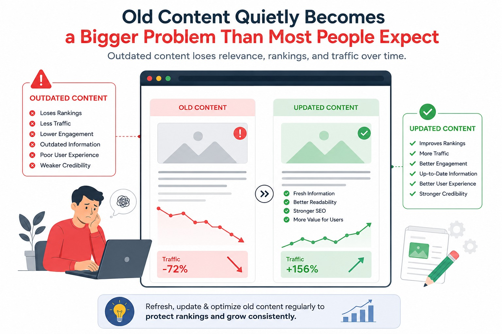
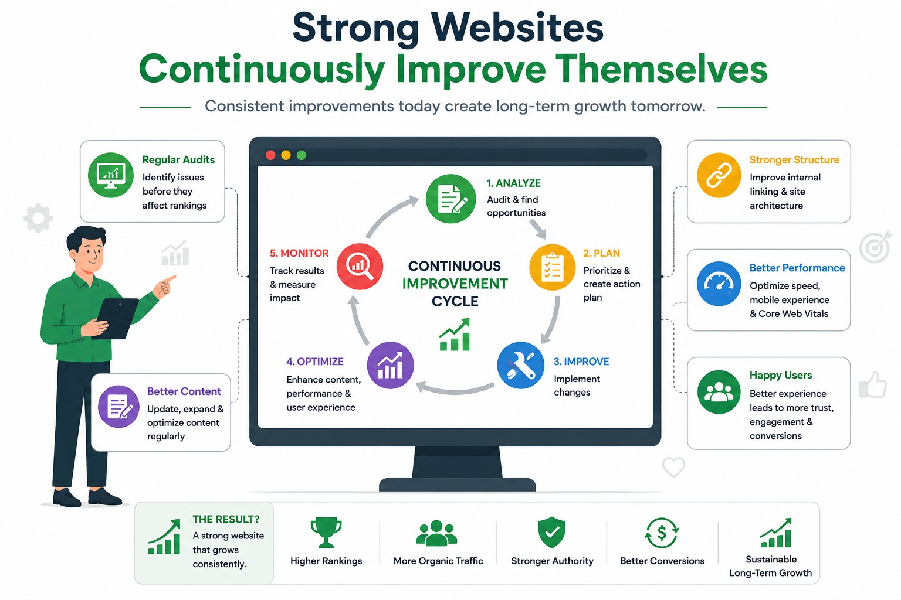

Most websites don’t suddenly lose rankings overnight.
Usually, the decline starts much earlier — quietly.
- Traffic slows a little.
- Some pages stop growing.
- Rankings fluctuate randomly.
- Old Posts lose visibility.
- Users spend less time on the site than before.
At first, these things don’t feel serious.
So most website owners ignore them.
They continue publishing more content, chasing new keywords, building backlinks, trying different SEO tactics — assuming growth will eventually return on its own.
But sometimes the real issue has nothing to do with content quantity.
The website itself is slowly becoming harder to trust.
And that’s the part many people miss.
Because a website can look completely normal from the outside while developing dozens of small problems underneath.
That’s where website audits become important.
Not as an SEO “task”.
But as a way to understand whether your website is actually healthy enough to keep growing long term.
Most Website Problems Build Quietly
One thing people rarely talk about in SEO is how gradual website decline usually is.
It almost never feels dramatic in the beginning.
- Maybe your site becomes slightly slower after installing extra plugins.
- Maybe old articles still rank, but users leave faster than before.
- Maybe internet links are broken on older pages you haven't checked in months.
Individually, these things don’t seem dangerous.
But websites are systems.
And systems become unstable when small issues pile up for too long.
That’s why some websites suddenly struggle after algorithm updates even though “nothing major changed.”
Something did change.
The site slowly became weaker over time.
Search engines notice those patterns earlier than website owners usually do.
Publishing More Content Doesn’t Always Solve the Problem
A lot of people react to falling traffic the same way:
Publish more articles.
And honestly, that approach sometimes works temporarily. Fresh content can create new visibility opportunities.
But if the website foundation itself is weak, more content usually just adds more weight to an already disorganized structure.
Imagine adding excellent new blog posts to a website that:
- Loads slowly on mobile
- Has confusing navigation
- Contains outdated articles
- Has poor internal linking
- Feels cluttered while reading
- Makes important pages hard to discover
Even strong content struggles in that environment.
Because SEO today is heavily connected to overall user experience.
Search engines don’t just evaluate content anymore.
They evaluate how the entire website feels to users.
That’s a major reason audits matter so much now compared to a few years ago.
Old Content Quietly Becomes a Bigger Problem Than People Expect

One mistake website owners make is assuming old content will keep performing forever once it ranks.
But search intent changes constantly.
What users wanted two years ago may not be what they expect today.
- Competitors publish deeper guides.
- Information becomes outdated.
- User behaviour changes.
And gradually, older articles start losing relevance.
Sometimes it happens so slowly that website owners don’t notice until a large portion of traffic disappears.
This is why content audits are underrated.
Not because every old article needs rewriting.
But because websites need maintenance.
Sometimes an article only needs:
- Better formatting
- Updated examples
- Stronger explanations
- Improved internal linking
- More relevant information
- Cleaner readability
Small improvements can completely refresh a page that was slowly declining.
And honestly, updating strong existing pages is often more effective than endlessly creating weak new ones.
Technical SEO Issues Usually Stay Invisible
Technical SEO problems are dangerous because most of them don’t announce themselves clearly.
The website still opens.
Pages still exist.
Everything looks fine.
Meanwhile, underneath:
- Search engines may struggle to crawl certain pages
- Internal authority flow may weaken
- Mobile usability may decline
- Page speed may worsen gradually
- Broken redirects may start building up
None of this feels urgent until rankings begin behaving strangely.
That’s why regular audits matter even for websites that currently seem healthy.
Because once technical problems start affecting visibility heavily, fixing recovery becomes much harder.
Good SEO isn’t only about growth.
It’s also about stability.
And stable websites are usually maintained consistently behind the scenes.
User Experience Quietly Affects SEO More Than Before
A few years ago, websites could rank with mediocre user experience if the SEO was aggressive enough.
That’s becoming harder now.
Users are less patient.
If a page feels
- Slow
- Cluttered
- Outdated
- Frustrating
...people leave quickly.
Search engines notice those patterns.
Not instantly.
But over time.
That’s why website audits should never focus only on “technical SEO.”
They should also examine how the website actually feels to use.
Because sometimes rankings drop for reasons that technically aren’t “SEO mistakes.”
The site simply stopped creating a smooth experience.
And honestly, users notice quality faster than most website owners think.
Strong Websites Constantly Improve Themselves

When you study websites that perform well consistently for years, something becomes obvious.
They rarely stay static.
- They improve old pages.
- They refresh outdated content.
- They clean technical problems regularly.
- They strengthen site structure over time.
- They make browsing easier.
- They remove friction before it becomes serious.
In other words, they treat the website like a long-term asset — not just a traffic machine.
That mindset changes everything.
Because long-term SEO growth usually comes from maintenance and refinement, not constant shortcuts.
A Simple Tool That Actually Helps During Audits
One frustrating part of content auditing is opening dozens of URLs manually while reviewing pages.
Especially on larger websites.
That’s where tools like Bulk URL Opener become genuinely useful.
Instead of opening pages one by one, you can quickly review multiple URLs together while checking:
- Old content updates
- Internal linking structure
- Layout consistency
- SEO improvements
- User experience issues
It sounds like a small thing, but during large audits, saving that time matters a lot.
Especially when reviewing content archives or category-based pages.
Final Thoughts
Most websites don’t stop growing because of one huge mistake.
Usually, growth slows because small problems quietly build for too long without attention.
- Outdated content.
- Weak structure.
- Technical inefficiencies.
- Poor readability.
- Slow performance.
- Disconnected internal linking.
Website audits help uncover these issues before they start damaging long-term growth seriously.
Because modern SEO is not only about publishing more.
It’s about maintaining a website that continues becoming better over time.
And the websites that consistently improve themselves are usually the ones that survive longer, rank more steadily, and build real authority over time.